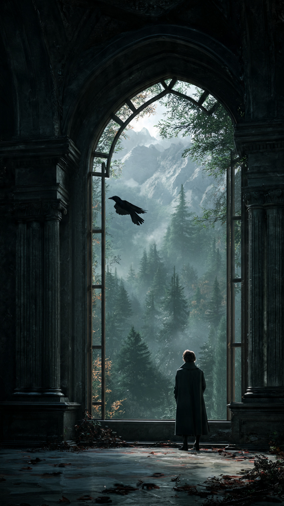
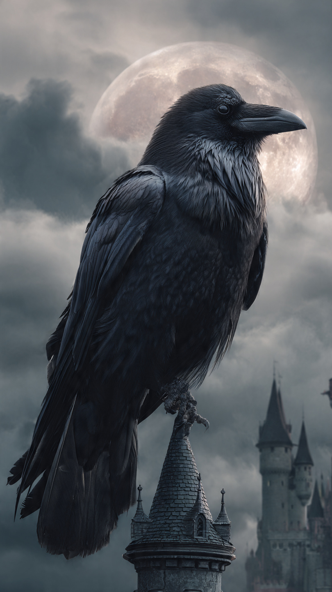

في مملكة "فالوريا"، كان الناس يعيشون في سلام منذ عشرات السنين.
كانت القلاع الشاهقة تزين قمم الجبال، والأنهار تمر بين الحقول الخضراء، بينما كانت أجراس القصر تدق كل صباح معلنة بداية يوم جديد.
وكان الجميع ينتظر اليوم الذي يتولى فيه الأمير الشاب ريان حكم المملكة بعد والده الملك.
كان ريان محبوبًا بين الناس.
شجاعًا.
ومتواضعًا.
ويخرج متخفيًا أحيانًا ليساعد الفقراء دون أن يعرف أحد هويته.
لكن في أعماق الغابة السوداء، كانت هناك ساحرة عجوز لم تنسَ وعدًا كُسر قبل سنوات طويلة.
وكانت تنتظر لحظة انتقامها.
في ليلة اكتمال القمر، خرج ريان وحده في رحلة صيد قرب الغابة.
وبينما كان يتتبع غزالًا أبيض نادرًا، سمع صوت امرأة تطلب النجدة.
ركض نحو الصوت، فوجد عجوزًا محاصرة بين جذور شجرة ضخمة.
دون تردد، ساعدها على النهوض.
لكن ما إن أمسكت يده...
حتى تغيرت ملامحها.
واختفت التجاعيد.
وتحولت إلى الساحرة التي حذره منها الجميع.
ابتسمت ابتسامة باردة وقالت:
"قلبك طيب..."
"لكن دماء الملوك لا تُغفر."
ثم رفعت عصاها، ورددت تعويذة قديمة.
أحاطت ريان دوامة سوداء من الريش.
وشعر بجسده يتغير.
وقبل أن يصرخ...
اختفت الساحرة، ولم يبقَ في المكان سوى ريشة سوداء تسقط ببطء على الأرض.
عاد ريان إلى القصر وهو يشعر بإرهاق شديد.
وفي صباح اليوم التالي، وقبل أن تشرق الشمس بلحظات، استيقظ على ألم غريب في جسده.
بدأت يداه تصغران.
وغطي الريش الأسود ذراعيه.
ثم تحولت ساقاه إلى مخالب.
وفي ثوانٍ...
أصبح غرابًا أسود.
طار مذعورًا من نافذة غرفته قبل أن يراه أحد.
وظل يحلق فوق الغابات طوال النهار.
ومع غروب الشمس...
عاد إلى هيئته البشرية من جديد.
أدرك حينها أنه أصبح أسير لعنة غامضة.
مرت الأيام وهو يخفي سره.
لكن في كل صباح يتحول إلى غراب.
وفي كل مساء يعود إنسانًا.
وبينما كان يبحث في مكتبة القصر عن أي مخطوطة تتحدث عن اللعنات، عثر على خريطة قديمة مخبأة داخل كتاب ممزق.
وفي أسفلها كانت جملة مكتوبة بحبر ذهبي:
"لن تُكسر اللعنة...إلا عندما يجد الغراب وريث ضوء الفجر."
وفي اللحظة نفسها...
دخلت نسمة قوية من النافذة.
وحملت الخريطة خارج القصر.
فطار ريان خلفها على هيئة غراب...
غير مدرك أن رحلته الحقيقية قد بدأت للتو.
📷 الصورة رقم 1

طار ريان خلف الخريطة التي كانت تتراقص مع الرياح فوق الغابات والأنهار.
لم يكن يستطيع التحكم في اتجاهها.
وكأن قوة خفية كانت تقودها إلى مكان محدد.
وبعد رحلة طويلة، وصلت الخريطة إلى قرية صغيرة تقع عند أطراف الجبال، ثم سقطت أمام منزل خشبي بسيط.
هبط ريان على غصن قريب وهو ما يزال في هيئة غراب.
وفي تلك اللحظة خرجت فتاة تحمل سلة من الزهور.
كان اسمها ليلى.
التقطت الخريطة من الأرض، وتأملتها بدهشة.
وما إن لمستها...
حتى أضاءت الحروف الذهبية من جديد.
اقترب ريان منها بحذر.
لم يهرب منها كما كان يفعل مع بقية البشر.
شعر بشيء غريب.
وكأن الخريطة اختارتها هي.
ابتسمت ليلى للغراب وقالت:
"يبدو أنك أنت أيضًا تبحث عن صاحب هذه الخريطة."
لم تكن تعلم أنها تتحدث مع الأمير نفسه.
ومنذ ذلك اليوم، أصبح الغراب الأسود يرافقها في كل مكان.
ومع غروب الشمس، عاد ريان إلى هيئته البشرية.
تسلل إلى القرية متخفيًا، والتقى بليلى.
عرّف نفسه على أنه مسافر يبحث عن آثار قديمة.
ولم يخبرها بحقيقته.
أما ليلى، فقد أخبرته أن الخريطة تشير إلى مكان يُسمى **معبد الفجر**، وهو معبد اختفى منذ مئات السنين.
وكان الناس يعتقدون أنه مجرد أسطورة.
في صباح اليوم التالي، تحوّل ريان إلى غراب مرة أخرى.
واستمرت الرحلة.
قادتهما الخريطة عبر غابات كثيفة، وأنهار ضيقة، حتى وصلا إلى بوابة حجرية عملاقة مغطاة بالنباتات.
في أعلاها كان نقش لشمس تشرق بين جناحين أسودين.
وما إن اقتربت ليلى من البوابة...
حتى انفتحت وحدها.
في الداخل، وجدا قاعة قديمة مليئة بالتماثيل.
كانت كلها لملوك وأمراء.
لكن أحد التماثيل كان مختلفًا.
كان يجسد أميرًا يحمل غرابًا على كتفه.
وتحت التمثال كُتب:
"من يحمل لعنة الظلام...لن ينقذه إلا وريث ضوء الفجر."
توقفت ليلى أمام الكلمات.
ثم نظرت إلى الغراب الأسود الذي كان يقف بجانبها.
وكأنها بدأت تشك أن هذا الطائر يخفي سرًا أكبر مما تتخيل.
وفجأة، اهتز المعبد بعنف.
وانفتحت أرضية القاعة.
وصعد منها فارس ضخم يرتدي درعًا ذهبيًا قديمًا، ويحمل سيفًا يلمع كالشمس.
رفع خوذته ببطء.
وقال بصوت هز أرجاء المعبد:
"لن يدخل أحد إلى قلب المعبد...إلا إذا كشف حقيقته أولًا."
📷 الصورة رقم 2

وقف ريان أمام الفارس الذهبي، بينما كان قلبه يخفق بسرعة.
كان يعلم أن هذه اللحظة قد تحدد مصيره.
رفع الفارس سيفه وقال:
"المعبد لا يختبر القوة..."
"بل يختبر الحقيقة."
ثم نظر إلى الغراب الأسود وأضاف:
"أظهر من تكون."
تردد ريان للحظة.
لقد أخفى سره عن الجميع طوال هذه الفترة.
لكن شيئًا داخله أخبره أن الوقت قد حان.
اقترب من ليلى.
ثم تحول أمام عينيها.
اختفى الريش الأسود.
وعاد الأمير ريان إلى هيئته البشرية.
تراجعت ليلى بدهشة.
وقالت:
"أنت..."
"الأمير؟"
أخفض ريان رأسه وقال:
"نعم."
"لكنني لم أرد أن يساعدني أحد بسبب لقبي."
"كنت أريد أن أعرف من أنا دون التاج."
ابتسم الفارس الذهبي.
وقال:
"لقد نجحت في الاختبار الأول."
ثم نظر إلى ليلى.
وفجأة بدأ الضوء يحيط بها.
تحولت ملابسها البسيطة إلى ثوب أبيض مزين بخيوط ذهبية.
وظهرت علامة على يدها تشبه شروق الشمس.
شهق ريان بدهشة.
فقال الفارس:
"هذه هي وريثة ضوء الفجر."
"آخر شخص من سلالة الحراس الذين كانوا يحمون المملكة من السحر المظلم."
فهم ريان الحقيقة.
لم تكن ليلى فتاة عادية.
ولم يكن وصولها إلى الخريطة صدفة.
فالساحرة لم تلعنه فقط...
بل قادت خطواته إلى الشخص الوحيد القادر على إنقاذه.
لكن قبل أن يكتمل الطقس، اهتز المعبد.
وانتشرت ظلال سوداء على الجدران.
ظهرت الساحرة العجوز من بين الدخان.
وقالت:
"ظننتم أنكم تستطيعون إلغاء لعنتي؟"
"هذه اللعنة وُلدت من غضب مئات السنين."
رفعت الساحرة عصاها.
فامتلأ المعبد بالظلام.
تحول ريان للحظة إلى غراب أسود مرة أخرى.
لكن هذه المرة لم يهرب.
فقد فهم أن اللعنة لم تكن سجنه...
بل كانت جزءًا من قوته.
استخدم جناحيه ليحمل بلورة الفجر نحو ليلى.
وعندما أمسكت بها، انطلق نور قوي ملأ المعبد.
اصطدم نور الفجر بظلام الساحرة.
بدأت ذكريات قديمة تظهر في الهواء.
اكتشف الجميع أن الساحرة لم تكن شريرة في الأصل.
بل كانت حارسة قديمة خُذلت من ملوك سابقين.
وكانت لعنتها محاولة لإجبار المملكة على تذكر أخطائها.
نظر إليها ريان وقال:
"الانتقام لن يعيد ما فقدته."
"لكن يمكننا أن نصنع مستقبلًا أفضل."
خفضت الساحرة عصاها.
وبدأت اللعنة تختفي.
عاد ريان إلى هيئته الطبيعية.
وسقط الريش الأسود على الأرض، وتحول إلى غبار من الضوء.
قالت الساحرة بصوت هادئ:
"كنت أبحث عن قلب ملك..."
"ولم أجده إلا في شخص اختار الرحمة بدل القوة."
ثم اختفت بين ذرات الضوء.
عاد ريان إلى المملكة.
وحكى للناس ما حدث.
ومنذ ذلك اليوم، لم يعد الحكم يعتمد على القوة أو النسب فقط...
بل على الحكمة والرحمة.
أما ليلى، فأصبحت حارسة المملكة الجديدة.
وكان ريان يحتفظ بريشة سوداء واحدة في قصره.
ليس كتذكار للعنة...
بل كتذكير بأن الإنسان قد يجد أعظم قوته في الشيء الذي ظنه ضعفه.